またまたレポートが遅くなりごめんなさい。３月１３日に池袋のP'PARCOにて期間限定でオープンしたミルモのキャラショップのレポートになります！
先に結論を書いてしまうと、もうすごすぎです！ 全部買いきれないほどの多彩なグッズ！ ミルモが連載していた頃を含めても、一度にこんなにたくさんのグッズが発売されたことはなかったですね。
すでにショップは終了しましたが、ショップやグッズの雰囲気をできるだけレポートで伝えていきたいと思います。なお通販は４月５日の２３時５９分まで受注受付中ですので、購入がまだの方はぜひ！
今回のレポートはボリュームがあるので、２回に分けて掲載します。まず前編はお店の雰囲気から！
なお今回はショップ開始日ではなく、１週間後の３月２１日のレポートになります。
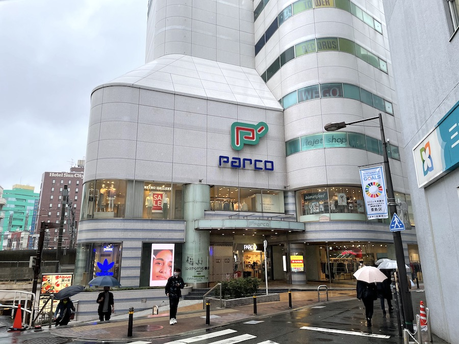
グラフアートグッズでもお馴染みの池袋P'PARCOへ。
行くたびにいつも雨が降っている気がします💦
なお、発売日当日の３月１３日は東京は雷雨でした。サリア様やムルモが雨を降らしているのかな？
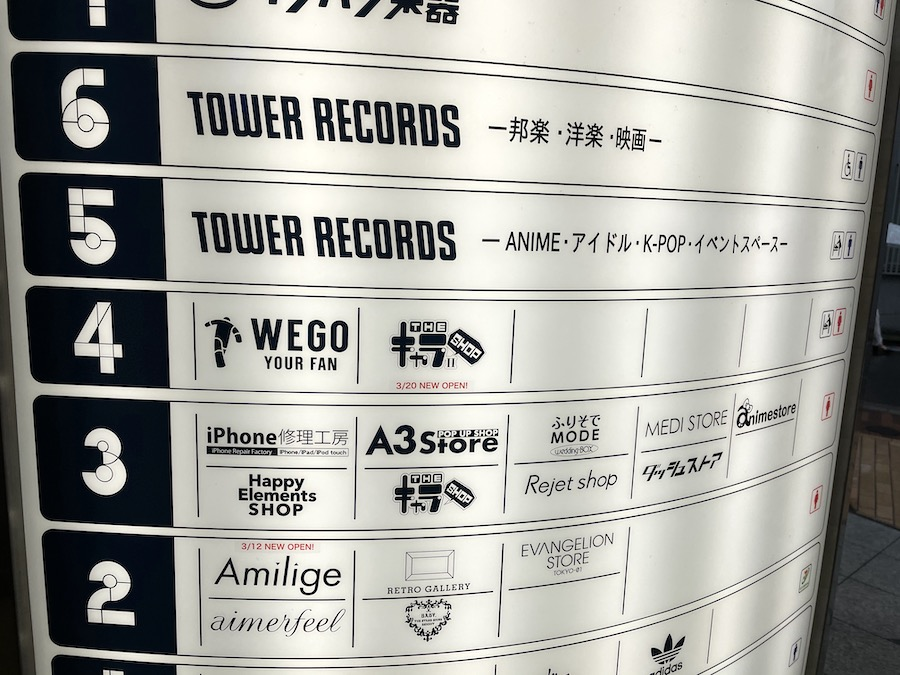
キャラショップはグラフアートがあった５階ではなく４階になります。
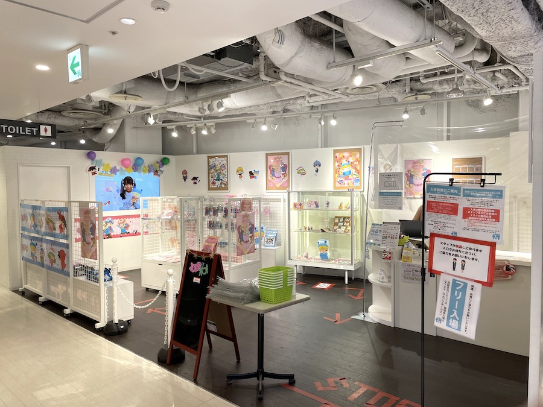
さぁ、ミルモのキャラショップが見えてきました！
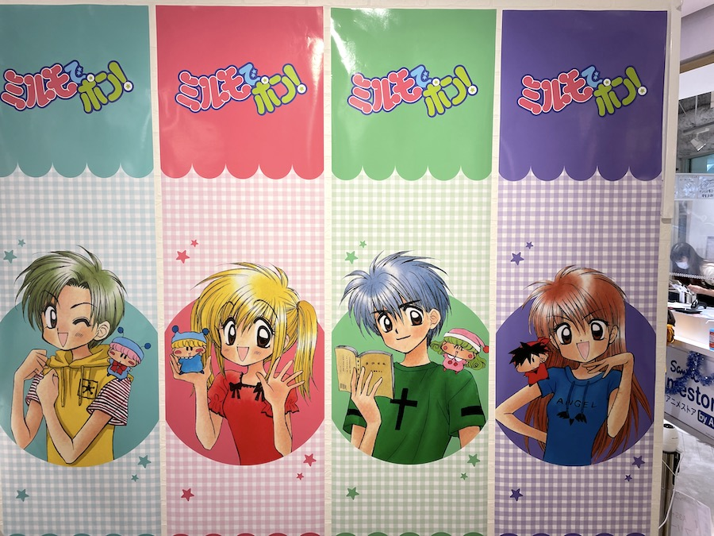
キャラショップの壁も主役の４人＆４妖精が描かれていて、見た人を「懐かしーっ！」と叫ばせてくれそうです。
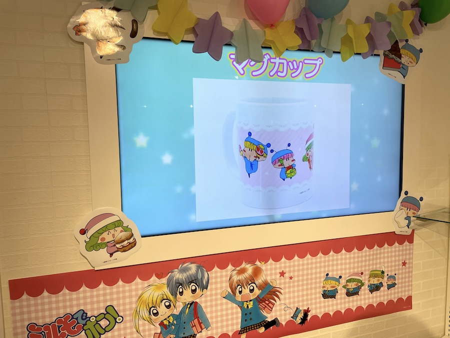
店内にも大きなモニターがあって、いろんなグッズを紹介していました。
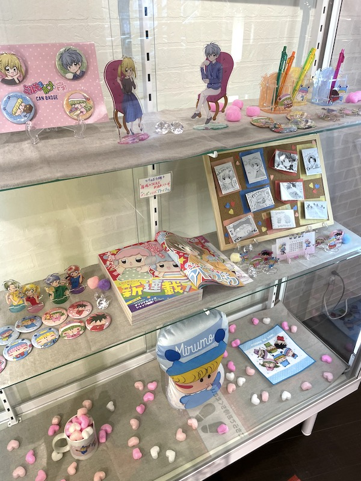
レジ横のショーケースで今回のいろんなグッズがディスプレイされていました。
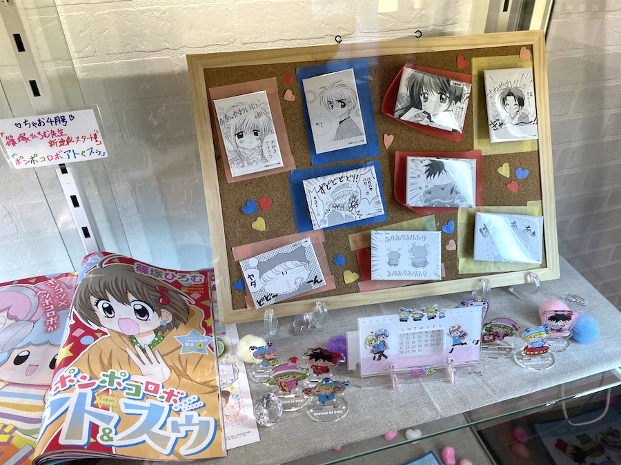
私的に今回のグッズで、原作の１コマが描かれた缶バッジがインパクトがあってお気に入りだったりします。
このディスプレイ展示もミルモの作品の雰囲気が感じられて素敵ですね。
でもブラインド商品なので全部揃えるのは至難の業・・・
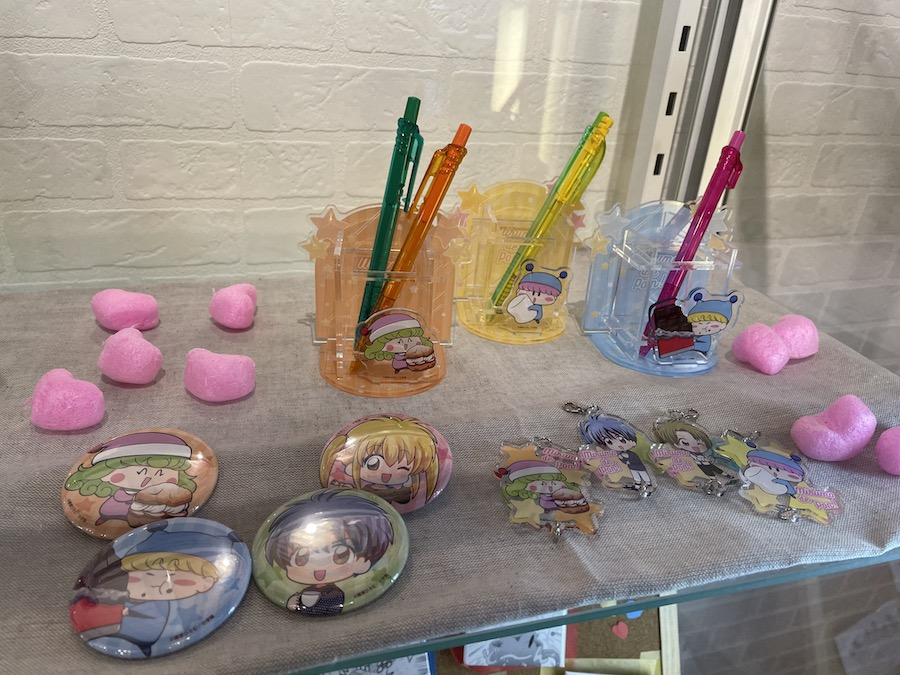
こちらはアクリルペンスタンド、つながるアクリルキーホルダー、カンバッジセットです。
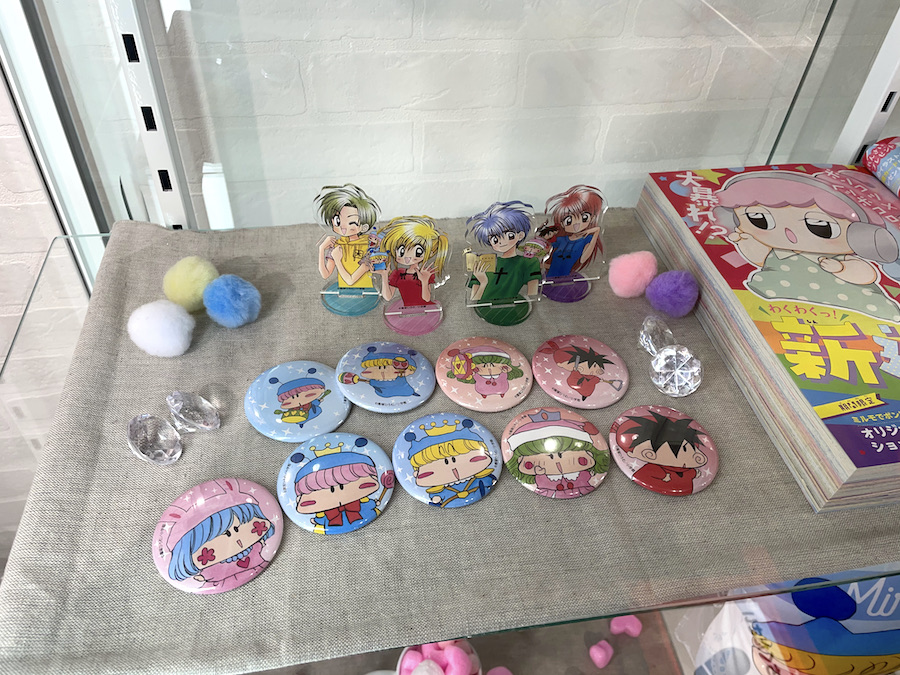
ミニアクリルスタンド、カンバッジ。
缶バッジは９種類もあってすごい・・
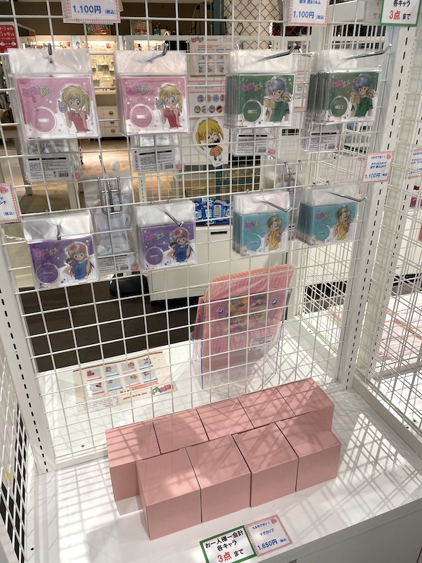
主役４人のアクリルスタンドとマグカップ。
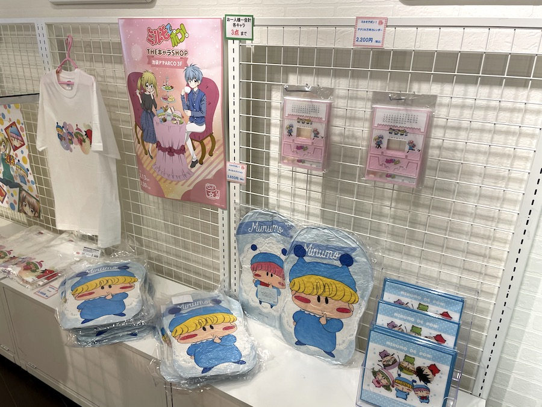
ミニタオル、ダイカットクッション、Tシャツ。
ダイカットクッションは遠くからでもすごく目立ちます(笑)
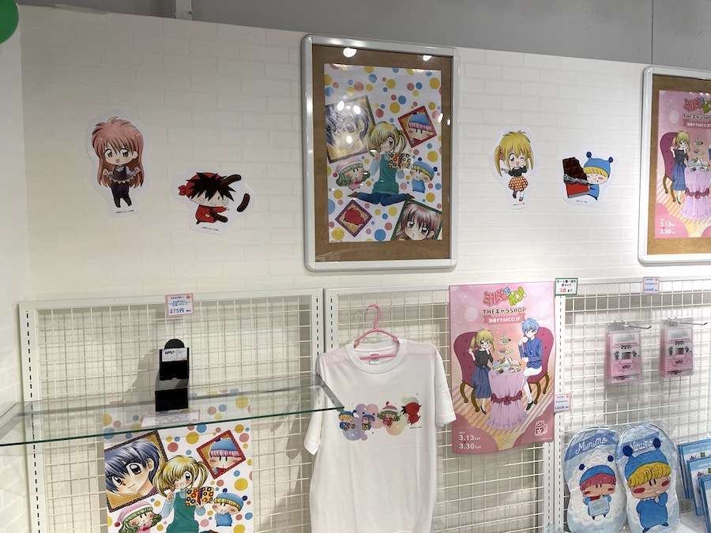
ショップの壁にも額縁や切り抜きでデコレーションされています。
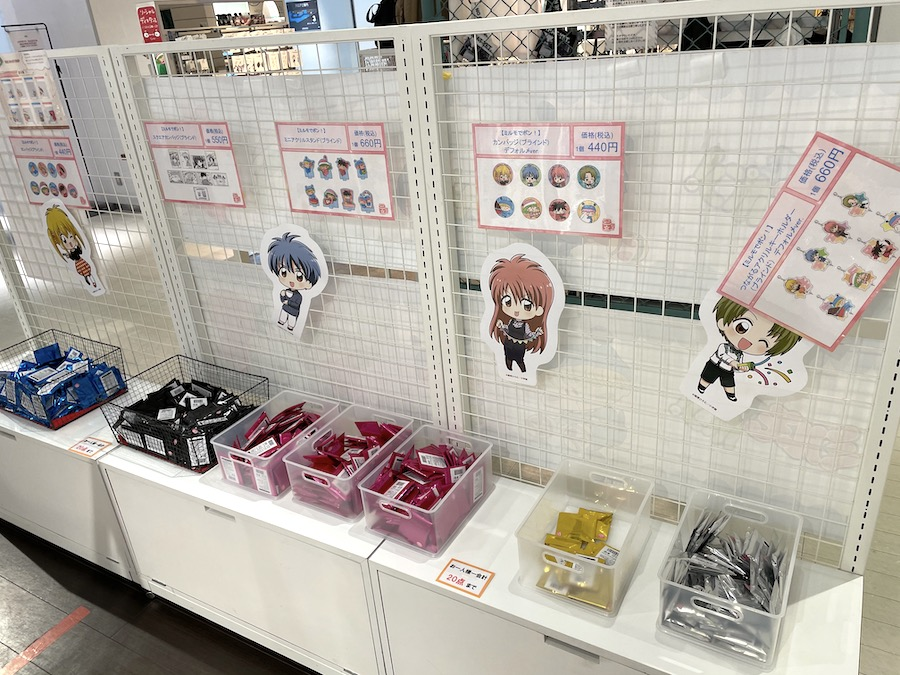
こちらはブラインドの製品群です。
５種類のブラインド製品をフルコンプした方は果たしているのだろーか？
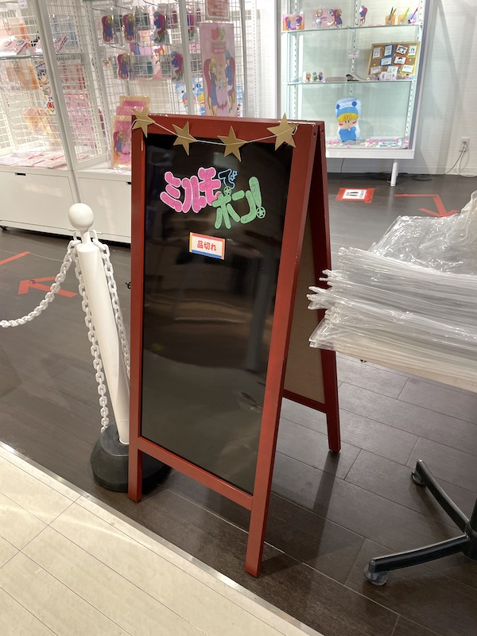
品切れの商品があると、お店の前でこのような形で掲示されるようです。（３月２１日の時点では品切れなしでした）
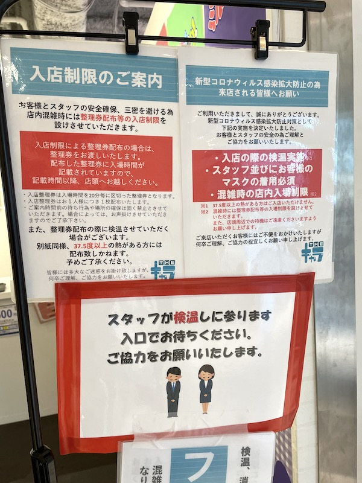
入店時に消毒と検温もあるので安心です(^^)
購入したグッズは後編で説明します〜。後編へ続く！
(2021/4/4)